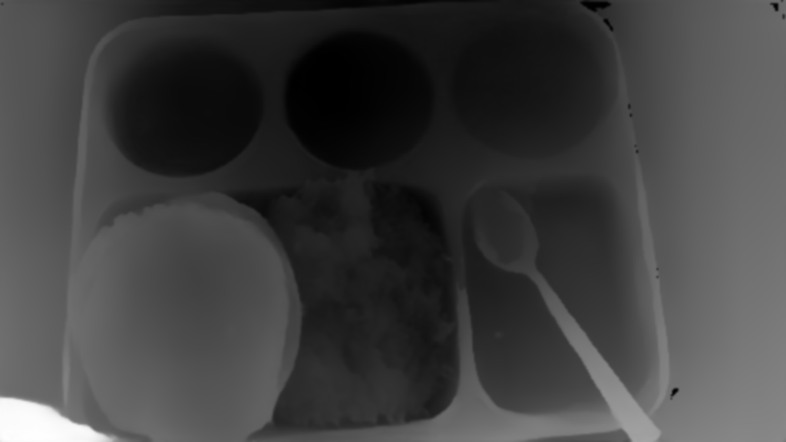
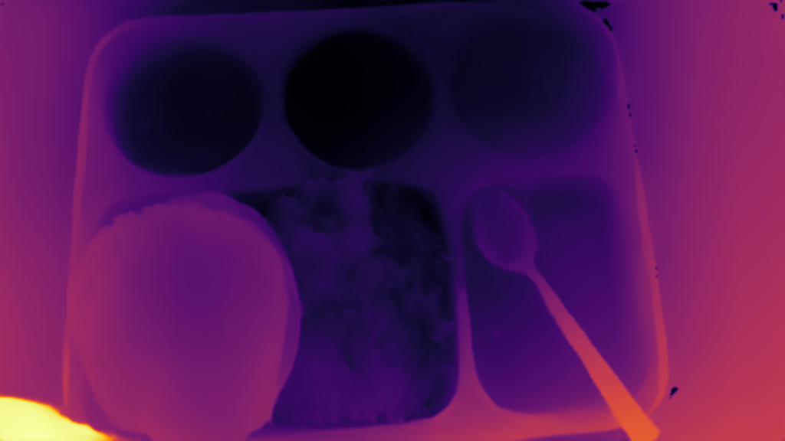
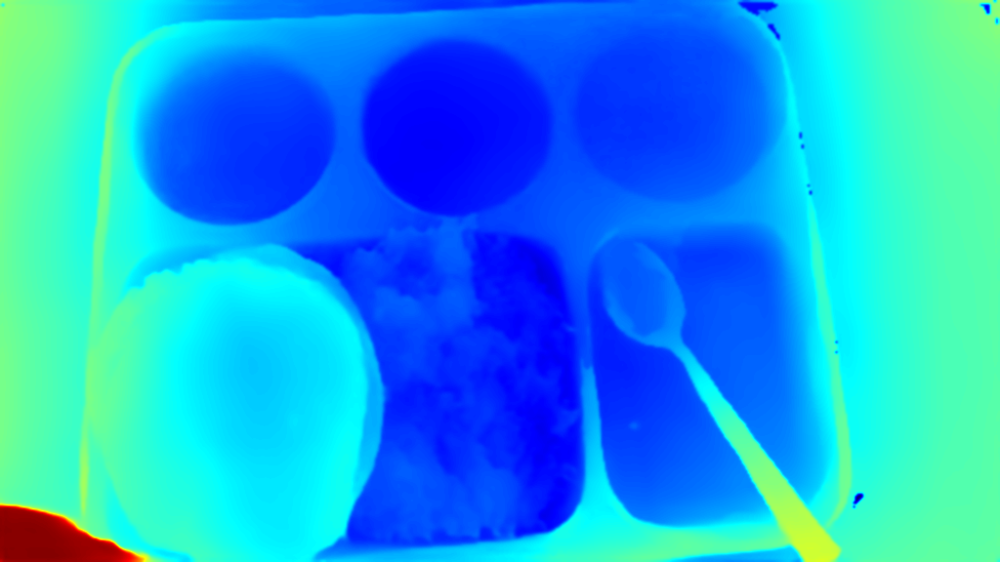
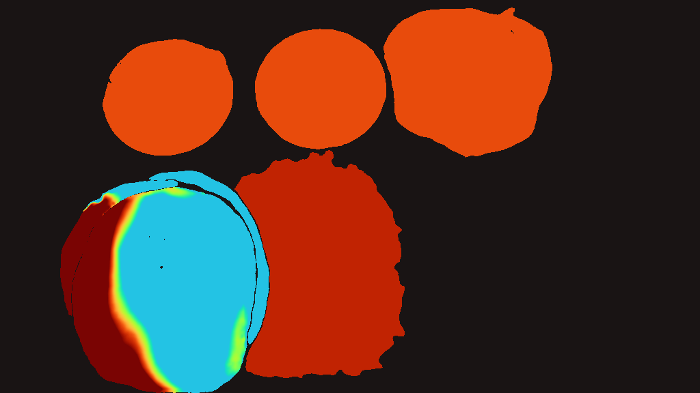
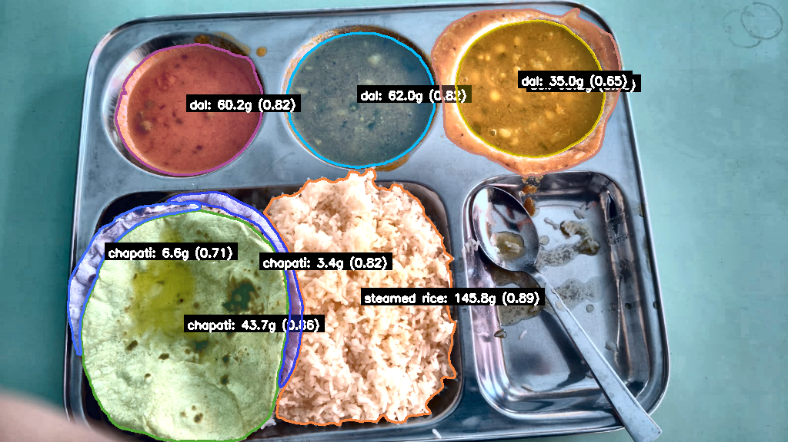

{
"resolution": "1600x900",
"channels": 3,
"dtype": "uint8",
"expected_items": [
"chapati",
"dal",
"steamed rice"
],
"plate_profile": null,
"debug": true
}





[]
{
"item_id": "steamed rice_1",
"area_pixels": 61293,
"estimated_height_cm": 1.688,
"volume_estimate_ml": 146.4,
"density": 0.996,
"mass_g": 145.8,
"class_label": "steamed rice",
"class_confidence": 0.9365,
"depth_stability": 1.0,
"scale_confidence": 0.7,
"composite_confidence": 0.8852,
"prior_applied": true,
"diagnostics": {
"original_sam3_query": "rice",
"candidate_labels": [
"rice"
],
"menu_matching_result": "steamed rice",
"final_food_label": "steamed rice",
"confidence": 0.9365,
"uncertainty": 0.0635,
"original_mask_id": "mask_00",
"grouped_instance_id": "inst_0",
"fragment_count": 1,
"decision_reason": "SINGLE_INSTANCE"
},
"fragment_count": 1
}{
"item_id": "chapati_2",
"area_pixels": 66970,
"estimated_height_cm": 0.868,
"volume_estimate_ml": 55.2,
"density": 0.792,
"mass_g": 43.7,
"class_label": "chapati",
"class_confidence": 0.8793,
"depth_stability": 1.0,
"scale_confidence": 0.7,
"composite_confidence": 0.8577,
"prior_applied": true,
"diagnostics": {
"original_sam3_query": "whole wheat roti",
"candidate_labels": [
"whole wheat roti"
],
"menu_matching_result": "chapati",
"final_food_label": "chapati",
"confidence": 0.8793,
"uncertainty": 0.1207,
"original_mask_id": "mask_01",
"grouped_instance_id": "inst_1",
"fragment_count": 1,
"decision_reason": "SINGLE_INSTANCE"
},
"fragment_count": 1
}{
"item_id": "chapati_3",
"area_pixels": 5180,
"estimated_height_cm": 0.495,
"volume_estimate_ml": 4.3,
"density": 0.799,
"mass_g": 3.4,
"class_label": "chapati",
"class_confidence": 0.8044,
"depth_stability": 1.0,
"scale_confidence": 0.7,
"composite_confidence": 0.8204,
"prior_applied": true,
"diagnostics": {
"original_sam3_query": "whole wheat roti",
"candidate_labels": [
"whole wheat roti"
],
"menu_matching_result": "chapati",
"final_food_label": "chapati",
"confidence": 0.8044,
"uncertainty": 0.1956,
"original_mask_id": "mask_02",
"grouped_instance_id": "inst_2",
"fragment_count": 1,
"decision_reason": "SINGLE_INSTANCE"
},
"fragment_count": 1
}{
"item_id": "dal_4",
"area_pixels": 26519,
"estimated_height_cm": 1.538,
"volume_estimate_ml": 56.8,
"density": 1.091,
"mass_g": 62.0,
"class_label": "dal",
"class_confidence": 0.8027,
"depth_stability": 1.0,
"scale_confidence": 0.7,
"composite_confidence": 0.8195,
"prior_applied": true,
"diagnostics": {
"original_sam3_query": "dal tadka",
"candidate_labels": [
"dal tadka"
],
"menu_matching_result": "dal",
"final_food_label": "dal",
"confidence": 0.8027,
"uncertainty": 0.1973,
"original_mask_id": "mask_03",
"grouped_instance_id": "inst_4",
"fragment_count": 1,
"decision_reason": "SINGLE_INSTANCE"
},
"fragment_count": 1
}{
"item_id": "dal_5",
"area_pixels": 25612,
"estimated_height_cm": 1.538,
"volume_estimate_ml": 54.8,
"density": 1.097,
"mass_g": 60.2,
"class_label": "dal",
"class_confidence": 0.7994,
"depth_stability": 1.0,
"scale_confidence": 0.7,
"composite_confidence": 0.8178,
"prior_applied": true,
"diagnostics": {
"original_sam3_query": "dal tadka",
"candidate_labels": [
"dal tadka"
],
"menu_matching_result": "dal",
"final_food_label": "dal",
"confidence": 0.7994,
"uncertainty": 0.2006,
"original_mask_id": "mask_04",
"grouped_instance_id": "inst_5",
"fragment_count": 1,
"decision_reason": "SINGLE_INSTANCE"
},
"fragment_count": 1
}{
"item_id": "dal_6",
"area_pixels": 27108,
"estimated_height_cm": 1.538,
"volume_estimate_ml": 58.1,
"density": 1.088,
"mass_g": 63.2,
"class_label": "dal",
"class_confidence": 0.7688,
"depth_stability": 1.0,
"scale_confidence": 0.7,
"composite_confidence": 0.802,
"prior_applied": true,
"diagnostics": {
"original_sam3_query": "dal tadka",
"candidate_labels": [
"dal tadka"
],
"menu_matching_result": "dal",
"final_food_label": "dal",
"confidence": 0.7688,
"uncertainty": 0.2312,
"original_mask_id": "mask_05",
"grouped_instance_id": "inst_6",
"fragment_count": 1,
"decision_reason": "SINGLE_INSTANCE"
},
"fragment_count": 1
}{
"item_id": "chapati_7",
"area_pixels": 5748,
"estimated_height_cm": 1.457,
"volume_estimate_ml": 8.4,
"density": 0.79,
"mass_g": 6.6,
"class_label": "chapati",
"class_confidence": 0.6035,
"depth_stability": 1.0,
"scale_confidence": 0.7,
"composite_confidence": 0.7106,
"prior_applied": true,
"diagnostics": {
"original_sam3_query": "chapati bread",
"candidate_labels": [
"chapati bread"
],
"menu_matching_result": "chapati",
"final_food_label": "chapati",
"confidence": 0.6035,
"uncertainty": 0.3965,
"original_mask_id": "mask_06",
"grouped_instance_id": "inst_3",
"fragment_count": 1,
"decision_reason": "SINGLE_INSTANCE"
},
"fragment_count": 1
}{
"item_id": "dal_8",
"area_pixels": 15289,
"estimated_height_cm": 1.538,
"volume_estimate_ml": 32.7,
"density": 1.068,
"mass_g": 35.0,
"class_label": "dal",
"class_confidence": 0.4981,
"depth_stability": 1.0,
"scale_confidence": 0.7,
"composite_confidence": 0.6456,
"prior_applied": true,
"diagnostics": {
"original_sam3_query": "dal tadka",
"candidate_labels": [
"dal tadka"
],
"menu_matching_result": "dal",
"final_food_label": "dal",
"confidence": 0.4981,
"uncertainty": 0.5019,
"original_mask_id": "mask_07",
"grouped_instance_id": "inst_7",
"fragment_count": 1,
"decision_reason": "SINGLE_INSTANCE"
},
"fragment_count": 1
}

{
"food_items": [
{
"name": "steamed rice",
"volume_ml": 146.4,
"mass_g": 145.8,
"calories": 189.6,
"protein": 3.9,
"carbs": 40.8,
"fat": 0.4,
"confidence": 0.8852,
"class_label": "steamed rice",
"class_confidence": 0.9365,
"top_k": [
{
"label": "steamed rice",
"confidence": 0.9365,
"raw_similarity": 0.9365
}
],
"identification_status": "recognized",
"menu_match": true,
"matched_menu_item": "steamed rice",
"identification_confidence": 0.9365,
"segmentation_confidence": 0.9365,
"association_confidence": 1.0,
"menu_match_confidence": 1.0,
"depth_confidence": 1.0,
"scale_confidence": 0.7,
"diagnostics": {
"original_sam3_query": "rice",
"candidate_labels": [
"rice"
],
"menu_matching_result": "steamed rice",
"final_food_label": "steamed rice",
"confidence": 0.9365,
"uncertainty": 0.0635,
"original_mask_id": "mask_00",
"grouped_instance_id": "inst_0",
"fragment_count": 1,
"decision_reason": "SINGLE_INSTANCE"
},
"fragment_count": 1,
"food_name": "steamed rice",
"instance_count": 1
},
{
"name": "chapati",
"volume_ml": 67.9,
"mass_g": 53.7,
"calories": 170.4,
"protein": 4.3,
"carbs": 30.6,
"fat": 1.9,
"confidence": 0.8577,
"class_label": "chapati",
"class_confidence": 0.8793,
"top_k": [
{
"label": "chapati",
"confidence": 0.8793,
"raw_similarity": 0.8793
}
],
"identification_status": "recognized",
"menu_match": true,
"matched_menu_item": "chapati",
"identification_confidence": 0.8793,
"segmentation_confidence": 0.8793,
"association_confidence": 1.0,
"menu_match_confidence": 1.0,
"depth_confidence": 1.0,
[
{
"step": "Input",
"message": "Original image saved",
"params": {
"resolution": "1600x900"
},
"elapsed_s": 0.0581,
"input_file": null,
"output_file": "original.png",
"timestamp": "2026-11-12T18:59:22.652827"
},
{
"step": "Pipeline",
"message": "Step 1 — Preprocessing & Perspective Warp",
"params": {},
"elapsed_s": null,
"input_file": null,
"output_file": null,
"timestamp": "2026-11-12T18:59:22.653345"
},
{
"step": "Quality Gate",
"message": "PASS",
"params": {
"blur_score": 132.45,
"tilt_deg": 7.5
},
"elapsed_s": null,
"input_file": null,
"output_file": null,
"timestamp": "2026-11-12T18:59:22.706259"
},
{
"step": "Preprocessing",
"message": "Resize applied",
"params": {
"original": "1600x900",
"target_long_edge": 1024,
"scale": 0.64
},
"elapsed_s": 0.0008,
"input_file": null,
"output_file": "01_resized.png",
"timestamp": "2026-11-12T18:59:22.735266"
},
{
"step": "Preprocessing",
"message": "Gaussian blur applied",
"params": {
"kernel": 5
},
"elapsed_s": 0.0005,
"input_file": null,
"output_file": "02_denoised.png",
"timestamp": "2026-11-12T18:59:22.761523"
},
{
"step": "Preprocessing",
"message": "LAB color normalization applied",
"params": {},
"elapsed_s": 0.0177,
"input_file": null,
"output_file": "03_color_normalized.png",
"timestamp": "2026-11-12T18:59:22.805652"
},
{
"step": "Preprocessing",
"message": "CLAHE contrast enhancement applied",
"params": {
"clip_limit": 2.0,
"tile_grid": "8x8"
},
"elapsed_s": 0.0035,
"input_file": null,
"output_file": "04_contrast_enhanced.png",
"timestamp": "2026-11-12T18:59:22.836012"
},
{
"step": "Preprocessing",
"message": "Canny edge detection",
"params": {
"low": 50,
"high": 150
},
"elapsed_s": 0.007| Step | Message | Params | Time |
|---|---|---|---|
| Input | Original image saved | {"resolution": "1600x900"} | 0.0581s |
| Pipeline | Step 1 — Preprocessing & Perspective Warp | — | — |
| Quality Gate | PASS | {"blur_score": 132.45, "tilt_deg": 7.5} | — |
| Preprocessing | Resize applied | {"original": "1600x900", "target_long_edge": 1024, "scale": 0.64} | 0.0008s |
| Preprocessing | Gaussian blur applied | {"kernel": 5} | 0.0005s |
| Preprocessing | LAB color normalization applied | — | 0.0177s |
| Preprocessing | CLAHE contrast enhancement applied | {"clip_limit": 2.0, "tile_grid": "8x8"} | 0.0035s |
| Preprocessing | Canny edge detection | {"low": 50, "high": 150} | 0.0072s |
| Preprocessing | Warp skipped (no 4-pt contour) | {"warped": false} | — |
| Preprocessing | Complete | {"output_size": "1024x576"} | 0.2248s |
| Pipeline | Step 2 — Compartments & Scale | — | — |
| Compartment Detection | Detected 0 compartments | {"min_area_frac": 0.02, "max_area_frac": 0.9, "compartment_count": 0} | 0.0075s |
| Scale Calibration | Fallback to bbox-based calibration | {"cm_per_pixel": 0.04081, "method": "bbox"} | — |
| Compartment Detection | Scale computed | {"cm_per_pixel": 0.04081, "pixel_area_cm2": 0.00166536, "compartments": 0, "scale_confidence": 0.7} | 0.0477s |
| Pipeline | Step 3 — Depth Estimation | — | — |
| Depth Estimation | Depth Anything depth map computed (smoothed) | {"device": "cuda", "is_metric": true, "shape": [576, 1024], "min": -104.118, "max": -33.894} | 0.6853s |
| Depth Normalization | Surface normal plane subtracted from depth | {"baseline": -80.447, "fitted_plane": true, "is_metric": true} | 0.0178s |
| Depth Metric [cm] | Metric depth height in cm directly computed | {"cm_per_pixel": 0.04081, "min_cm": 0.0, "max_cm": 15.0, "mean_cm": 1.14} | 0.0019s |
| Depth Estimation | Complete | — | 0.7584s |
| Pipeline | Step 4–6 — SAM 3 Food Identification & Segmentation | — | — |
| SAM3 | Identified 8 food items (8 recognized, 0 unlisted, 0 uncertain) | — | 17.8403s |
| Pipeline | Step 7 — Volume & Mass Estimation | — | — |
| Volume Estimation | Computed mass for 8 items | {"total_items": 8} | 0.0357s |
| Pipeline | ✅ Pipeline complete | {"total_food_items": 8, "avg_confidence": 0.7948, "scale_method": "bbox"} | 19.0667s |